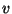

On ignore le fait qu'il y a deux compartiments (noyau et cytoplasme ne sont pas distingués).
Système de réactions :
Relation de conservation
| (1) |
car
 se trouve sous forme libre ou dans le complexe et
ne se dégrade pas.
se trouve sous forme libre ou dans le complexe et
ne se dégrade pas.
Modèle déterministe
D'après les réactions précédentes, le système déterministe est donné par:
Soient
Points stationnaires
Les points stationnaires vérifient:
On trouve deux attracteurs, mais un seul est valable lorsque car on considère des concentrations positives.
Le système linéarisé est:
Les parties imaginaires des valeurs propres de
cette matrice sont nulles, et les parties
réelles sont négatives pour nos choix de
paramétres. L'attracteur est donc un puits. cf figure ![[*]](crossref.png) .
.
Modèle stochastique
 le volume dans lequel sont les molécules,
 les concentrations de
les concentrations de
 et
et
 dans ce volume.
dans ce volume.
On suppose que la probabilité qu'une réaction de type aie lieu dans une courte période de temps est proportionnelle au nombre de molécules et et inversemment proportionnelle au volume ; et qu'une réaction de type est proportionnelle au nombre de molécules de .
est alors un processus de Markov, dont les sauts sont
Lorsque
on peut montrer que pour tout